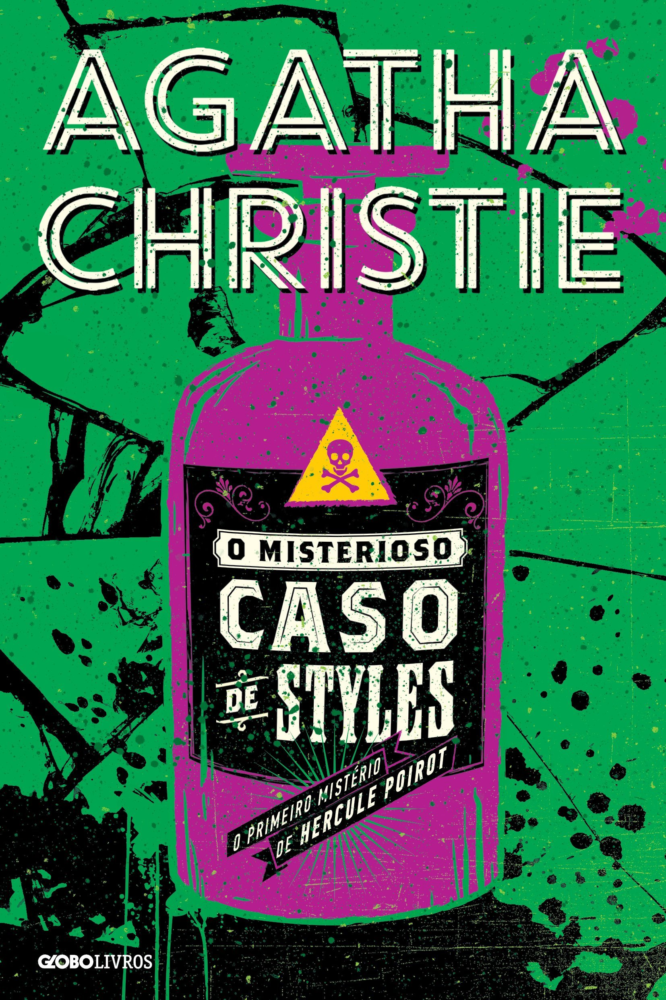
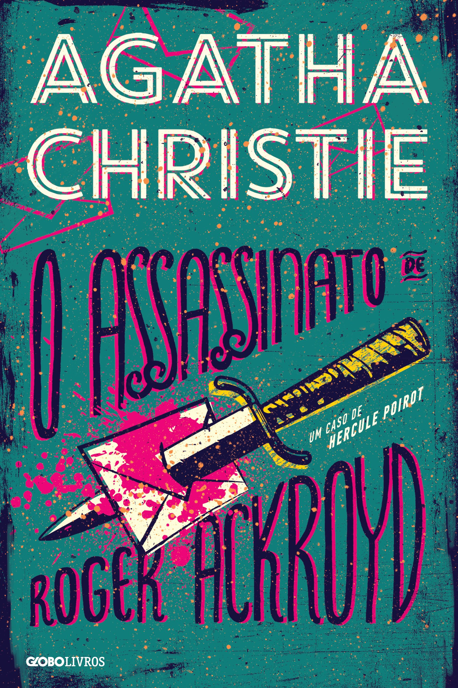
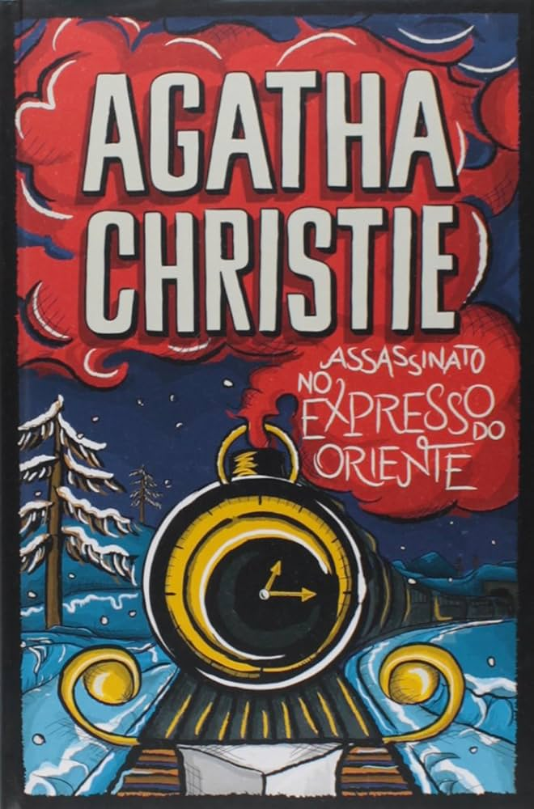
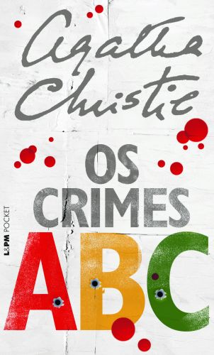
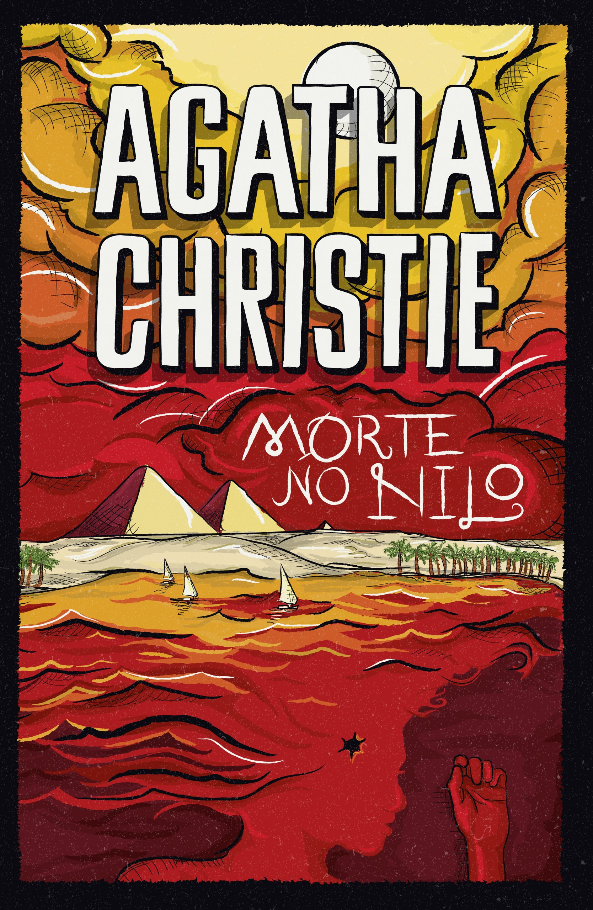
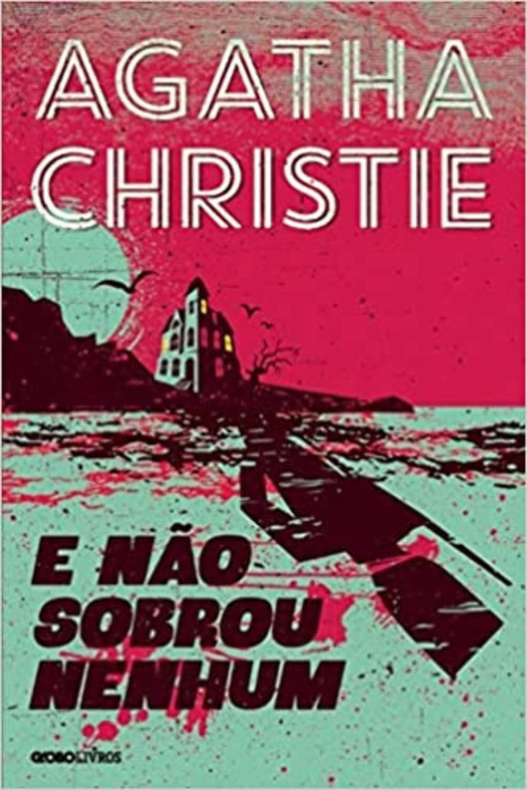
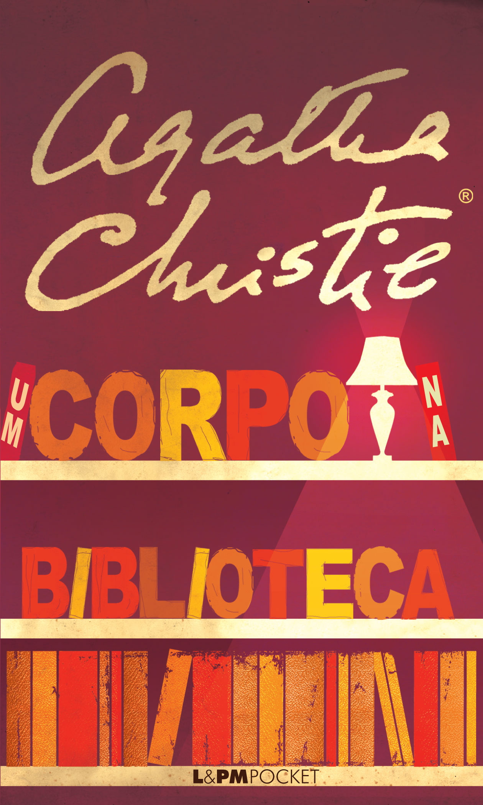
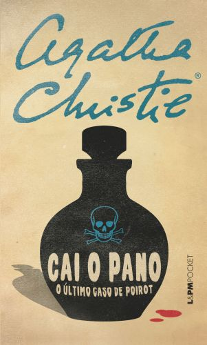
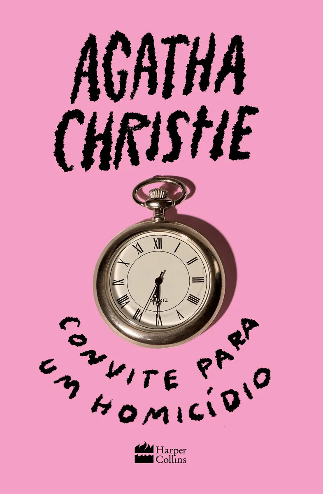

O Misterioso Caso de Styles
1920 Hercule PoirotA estreia de Agatha Christie e de Hercule Poirot.

Todos os mistérios da Rainha do Crime
→ Agatha Christie escreveu mais de 70 romances e contos. Estes são alguns dos mais conhecidos:
A estreia de Agatha Christie e de Hercule Poirot.

Obra aclamada que revolucionou o gênero policial devido ao seu narrador e à grande reviravolta no desfecho.

O detetive Hercule Poirot precisa solucionar o assassinato de um passageiro americano em um luxuoso trem preso pela neve.

Um assassino em série desafia Poirot deixando um exemplar do guia ferroviário ABC ao lado dos corpos em ordem alfabética.

Poirot investiga um crime passional a bordo de um navio a vapor durante um cruzeiro pelo rio Nilo.

Dez pessoas sem ligação aparente são convidadas para uma ilha isolada e começam a morrer uma a uma, sem a presença de um detetive tradicional. É um dos livros mais vendidos do mundo.

Um corpo aparece na biblioteca de uma casa de campo, e Miss Marple entra no caso.

Em "Cai o pano", Hercule Poirot, idoso e debilitado, convida o capitão Hastings à mansão Styles — palco do primeiro caso de ambos e atual hospedaria — para impedir um assassino misterioso conhecido como "X". Escrito na década de 1940 e publicado em 1975, o romance marca a despedida definitiva do célebre detetive belga criado por Agatha Christie.

Um anúncio de jornal convida os moradores do pacato vilarejo de Chipping Cleghorn para um homicídio em Little Paddocks, às 18h30. Curiosos com o que acreditam ser um jogo, os vizinhos comparecem, mas as luzes se apagam e um crime real acontece. Agora, a perspicaz Miss Marple entra em ação para desvendar uma teia de mentiras e identidades falsas, onde todos são suspeitos.
